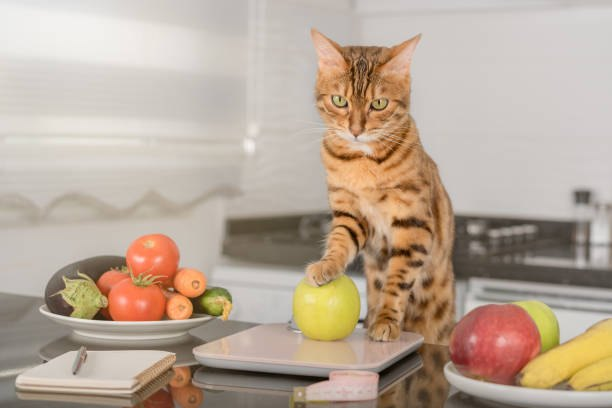
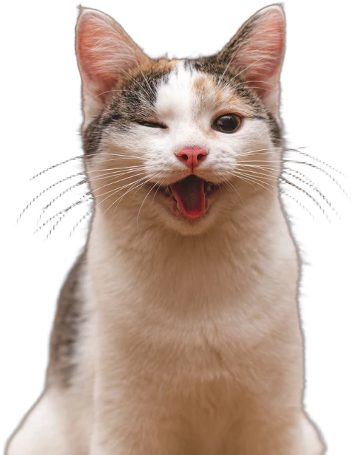

🐾 Guia do Gatinho Feliz
Comidinha natural e caseira para o seu gatinho
Receitas, sachês e petiscos com ingredientes simples. Receba no WhatsApp e só contribua se gostar.
Quero receber no WhatsApp
🍲 50 receitas
🥣 50 sachês
🍪 19 petiscos

Mais sabor e carinho no potinho
- Ingredientes de mercado, sem complicação
- Passo a passo para trocar a comida aos poucos
- Tudo em PDF, direto no seu celular

Você recebe primeiro 😉
Olhe o material com calma. Se gostar, contribui por PIX com o valor que puder, uma única vez.
Receber agora